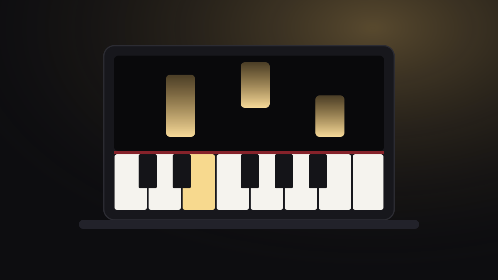

Beginner guides
How to Learn Piano Online for Free: A Complete Beginner's Guide

A generation ago, learning piano meant buying an instrument, finding a teacher and committing to weekly lessons before you even knew whether you'd enjoy it. Today you can play your first melody in a browser tab in less time than it takes to make tea. This guide shows you exactly how to learn piano online for free: what you need, what to practise, and how to keep going once the excitement of day one fades.
1. What you actually need
Less than you think. To begin:
- A device with a browser. A laptop, tablet or phone (held sideways) works. A free online piano like PianoVerse gives you a full 88-key virtual piano.
- Headphones or speakers. Good sound makes practice far more enjoyable.
- 10–15 minutes a day. Consistency matters much more than long sessions.
A physical keyboard is helpful but optional at the start. A computer keyboard lets you learn note names, melodies and rhythm. When you're ready to invest, an affordable 61-key or 88-key MIDI keyboard connected by USB lets you feel real keys while still using online lessons.
2. Understand the keyboard in 10 minutes
The piano looks complicated, but it is just one pattern of 12 notes repeated across the keyboard.
- The black keys come in groups of two and three. They are your map.
- The white key just left of any group of two black keys is C. The C nearest the middle of a full piano is called middle C (C4).
- From C, the white keys go C D E F G A B, then C again, one octave higher.
- Black keys are sharps (♯) and flats (♭): the black key just right of C is C♯ (also called D♭).
Try it now: find every C on the keyboard using the groups of two black keys. Then find every F, which is the white key just left of each group of three black keys.
3. Posture and finger numbers
Good habits from day one prevent tension and make everything easier later.
- Sit tall at a height where your forearms are roughly level with the keys.
- Curve your fingers as if you're holding a small ball, and play with the fleshy tips.
- Keep wrists relaxed: neither drooping nor raised high.
Pianists number their fingers 1 to 5 on each hand: thumb is 1, index 2, middle 3, ring 4, little finger 5. Fingering suggestions in songs use these numbers. PianoVerse shows the suggested finger for every note.
4. A 4-week practice plan
| Week | Focus (10–15 min/day) | Songs to try |
|---|---|---|
| 1 | Find notes by name; right-hand five-finger position on C–G | Mary Had a Little Lamb |
| 2 | Steady pulse with a metronome; repeated notes and steps | Twinkle Twinkle, Ode to Joy |
| 3 | Note lengths: quarter, half and dotted notes; 3/4 time | Happy Birthday, London Bridge |
| 4 | Moving your hand; first black keys; play-along in tempo | Jingle Bells, When the Saints |
Each day, spend a couple of minutes warming up (play C D E F G and back with each finger), learn or review a short phrase, then play something you already know just for fun. Finish while you're still enjoying it.
Use the right practice mode
Online tools make the classic "slow practice" advice easy to follow:
- Listen first. Hear the melody so you know what you're aiming for.
- Learn step by step. Let the app wait for you at every note until the order is in your fingers.
- Play along slowly. Use 60–70% speed and a count-in. Speed up by 10% only when you're accurate.
- Loop the hard part. Practise the trickiest phrase on its own, then put it back in context.
5. Do you need to read sheet music?
Not to start. Many adults quit because they try to learn reading and playing at the same time. A better route is to play first and read gradually: follow highlighted keys, notice the note names, and glance at the staff as you go. Within weeks, the staff starts to make sense because it describes music you can already play.
If you grew up with Indian music, you may already know Sargam (Sa Re Ga Ma Pa Dha Ni). You can learn piano in Sargam too. Read our guide on Sargam vs Western notation.
6. How to stay motivated
- Pick songs you love. Motivation is fuel; boring exercises drain it.
- Track tiny wins. Stars and streaks are surprisingly powerful. Aim to keep the streak alive, even with five minutes.
- Set a weekly goal. "Play Ode to Joy at full speed by Sunday" beats "get better at piano."
- Record yourself once a week and listen back. Progress is easy to miss day to day.
- Play for someone. Even a 30-second performance for a friend makes practice feel meaningful.
7. Common beginner mistakes
- Playing too fast. Speed hides mistakes and builds them in. Slow and accurate wins.
- Always starting from the beginning. Practise the hard bar, not the easy intro, fifty times.
- Flat fingers and tense shoulders. Pause, shake out your hands and reset your posture.
- Long, rare sessions. Two hours on Sunday is less effective than fifteen minutes every day.
Your next step
The best way to learn piano online is to start right now. Open PianoVerse, choose Mary Had a Little Lamb or Twinkle Twinkle Little Star, and follow the glowing keys. In five minutes you'll have played your first song, and tomorrow you'll play it better.